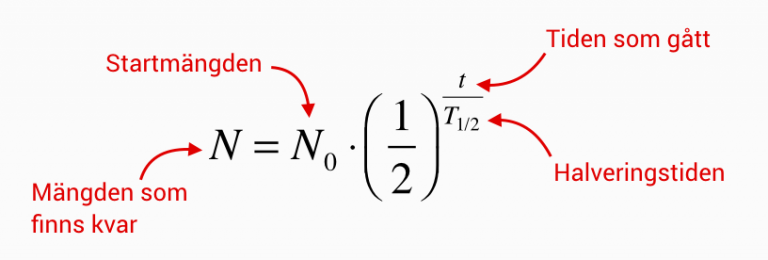
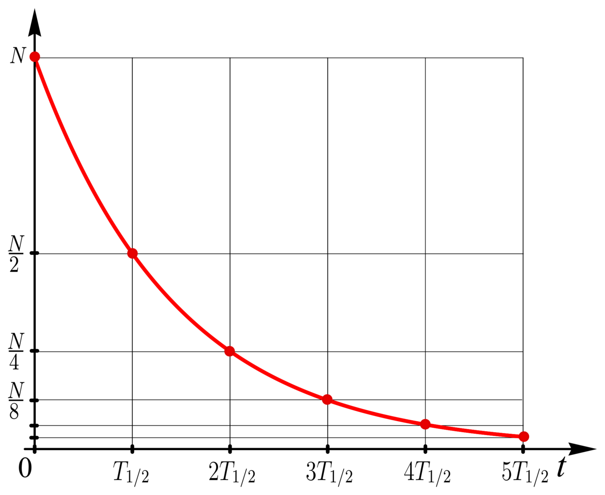

Halveringstid är den tid det tar för hälften av en given mängd av ett radioaktivt ämne att sönderfalla. Det är en viktig egenskap hos radioaktiva ämnen och används för att beskriva hur snabbt de sönderfaller över tid.
Halveringstiden kan variera kraftigt mellan olika radioaktiva ämnen. Vissa ämnen har mycket korta halveringstider, medan andra kan ha halveringstider som sträcker sig över miljontals år. Halveringstiden är en konstant egenskap för varje radioaktivt ämne och påverkas inte av yttre faktorer som temperatur eller tryck.
För att beräkna hur mycket av ett radioaktivt ämne som återstår efter en viss tid kan man använda formeln:

där N(t) är mängden av ämnet som återstår efter tid t, N₀ är den ursprungliga mängden av ämnet, T är halveringstiden, och t är den tid som har gått.
Halveringstiden är en viktig faktor att ta hänsyn till inom kärnfysik, medicin och miljövetenskap, eftersom den påverkar hur radioaktiva ämnen används och hanteras i olika sammanhang.
Om vi har 100 gram av ett radioaktivt ämne med en halveringstid på 10 år, så kommer det att finnas 50 gram kvar efter 10 år, 25 gram kvar efter 20 år, och så vidare. Efter 30 år kommer det att finnas 12,5 gram kvar, och efter 40 år kommer det att finnas 6,25 gram kvar.
